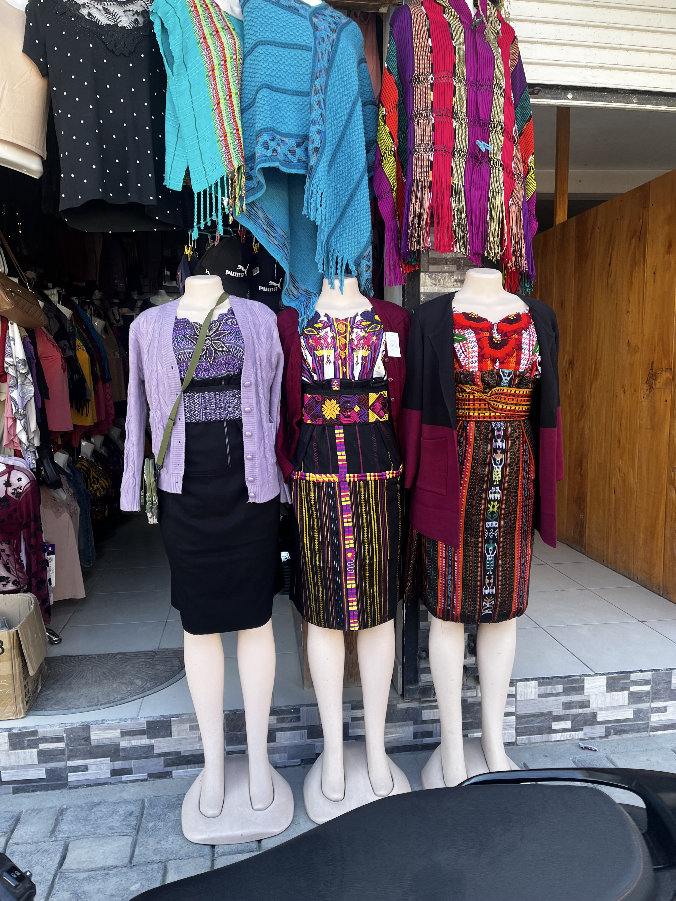

Antigua Guatemala se presenta como la joya turística del país. Su arquitectura colonial, sus calles empedradas y sus templos restaurados se venden como símbolos de orgullo nacional. Sin embargo, esta imagen tan pulida encierra silencios profundos. Las fachadas pintorescas que tanto atraen a los turistas ocultan una historia de violencia colonial que rara vez se menciona en las visitas guiadas o en los folletos turísticos. Detrás de cada iglesia barroca y cada calle de piedra hay siglos de opresión, de esclavitud indígena, de borramiento de culturas originarias.
Esta ciudad no fue construida para quienes la habitaron ancestralmente, sino para imponer un orden colonial. Y aunque hoy se promueve como un patrimonio de la humanidad, ese mismo "patrimonio" fue levantado sobre la sangre y las espaldas de pueblos que aún hoy siguen luchando por reconocimiento y justicia. El turismo ha maquillado esta historia, la ha convertido en decoración. Se privilegia la estética de lo antiguo, lo "bonito", mientras se excluye activamente el relato del despojo.
Maldonado-Torres (2007) habla de la colonialidad del ser como la forma en que la experiencia de vida de los pueblos colonizados sigue marcada por la deshumanización. Antigua es una prueba viva de ello: su belleza colonial sigue en pie, pero los cuerpos indígenas que la levantaron son ignorados, desplazados hacia los márgenes. En los restaurantes de lujo y hoteles boutique, el idioma maya no se escucha; tampoco hay placas que reconozcan la resistencia de los pueblos que sobrevivieron a la evangelización forzada, al trabajo servil o a la criminalización cultural.
Como lo plantea Quijano (2000), el problema no es solo histórico, sino estructural. La colonialidad del poder organiza el presente, jerarquiza lo europeo como deseable, y convierte las huellas coloniales en atracción económica. Antigua es símbolo de cómo se celebra la herencia colonial sin cuestionarla, de cómo se comercializa la memoria sin repararla.
El visitante admira sus iglesias sin saber que muchas fueron construidas sobre sitios sagrados indígenas. Toma fotos de los arcos coloniales sin preguntarse a quién se obligó a levantar esos muros. Así, el turismo transforma el dolor en postal, y convierte el silencio en parte de la experiencia. El problema no es que Antigua sea bella; el problema es que su belleza se narra sin memoria crítica, sin contexto histórico, sin dignidad para quienes la habitaron primero.
Mirá este video documental sobre cómo el turismo ha transformado Antigua Guatemala en una vitrina colonial.
Fachadas coloniales que ocultan siglos de despojo y borramiento cultural.
2. San Juan Atitán: Una vida fuera del escaparate
San Juan Atitán, un pequeño municipio en Huehuetenango, parece existir fuera del circuito turístico. Aquí se habla Mam, se cocina con leña y se teje con telar de cintura. No es una réplica para turistas, es una comunidad viva. La cultura no se muestra, se habita.
Esta forma de vida contrasta radicalmente con la presentación folclorizada del indígena en el mercado de Chichicastenango o Antigua. En palabras de Stuart Hall (1996), la etnicidad sin garantías es aquella que existe fuera de las estructuras oficiales, con una identidad que se resiste a ser reducida a mercancía. Este video sobre la cultura Mam en Guatemala es un testimonio vivo de esa resistencia.
El tejido no es sólo técnica; es también transmisión de saberes, identidad, memoria.
3. Mercado, consumo y lo “típico”
Los mercados artesanales en Guatemala exhiben trajes típicos, cerámica, tejidos, figuras religiosas. Pero muchas veces estos objetos han sido separados de sus contextos comunitarios y rituales. La vestimenta maya deja de ser símbolo de identidad y se convierte en objeto decorativo. Esto es parte de lo que Aníbal Quijano (2000) define como la “colonialidad del poder”, donde el conocimiento indígena es deslegitimado y reapropiado por las lógicas capitalistas.
¿Qué ocurre cuando el maniquí reemplaza al cuerpo real? ¿Qué se pierde cuando la voz Mam es sustituida por una etiqueta de “producto artesanal”? Este artículo de Prensa Libre muestra cómo la pérdida de lenguas está conectada con la pérdida de mundos enteros.

La cultura transformada en vitrina: trajes sin historia, cuerpos sin voz.
4. La cocina como resistencia cotidiana
En el altiplano occidental, cocinar con leña no es signo de atraso, sino de continuidad cultural. El comal, la tortilla recién hecha, la leña, la olla de barro, son parte de una red simbólica donde el tiempo se vive distinto. Esta no es una cocina para vender una experiencia turística, es una cocina para alimentar la vida. La memoria entra por la boca, por el humo, por el maíz.
El turismo promueve experiencias “auténticas” empaquetadas, mientras ignora la lucha diaria por el derecho a cocinar como se ha hecho por generaciones. La gastronomía indígena no está en restaurantes de lujo, está en las casas humildes donde se habla en voz baja, en Mam.